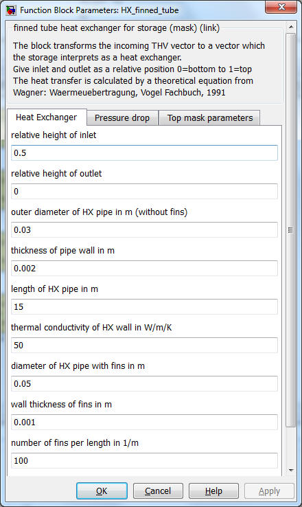
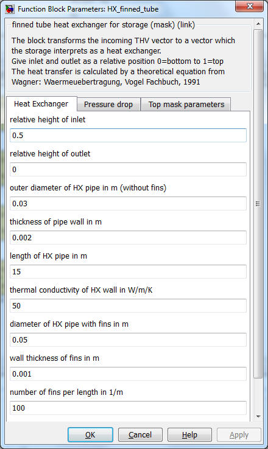

HX_data_fit
heat exchanger model for linear data fit
HX_data_fit_stratified
as above, but for stratified charging
HX_EN12977
heat exchanger model for data fit
according to TRNSYS Type 340 model
HX_EN12977_stratified
as above, but for
stratified charging
HX_tube
theoretical model of a smooth tube heat
exchanger
HX_tube_stratified
as above, but for stratified charging
HX_finned_tube
theoretical model of a finned tube heat
exchanger
HX_finned_tube_stratified
as above, but for stratified charging
Path: CARNOT\public\library_simulink\Storage\Thermal\Storage_Ports
Purpose
Heat exchanger
models
for the thermal storage model "Storage_Tnode" used in
the Storage_Type_N blocks.
Description
The incoming THB
is transformed to a vector giving the heating power to each node of the storage.
The
heat exchanger models use
the basic block
"sfun_storage_heatexchanger"
in
CARNOT\Basic\Thermal_Models. In this block the s-function
"storage_heatexchanger" solves the different equations for the heat transfer.
Inputs and outputs
Structure
the input vector
|
Port |
index |
use |
unit |
|
1 |
1..NODES |
temperatures of storage nodes |
degree Celsius |
|
2 |
1 |
inlet temperature |
degree Celsius |
|
|
2 |
massflow |
kg/s |
|
|
3 |
pressure |
Pa |
|
|
4 |
fluid ID (defined in carlib.h) |
|
|
|
5 |
mixture (defined in carlib.h) |
Structure
of the output vector
Port
index
use
1
1..NODES
power entering
node from outside
vector with
one element per node
2
1..NODES
temperature of
the heat exchanger at node
Parameters
Mathematical model
The ports also model stratified discharging for inlet below outlet. In this
case the port starts discharging the storage if the flow temperature reaches a
node where the temperature is higher.
For
undefined heat exchangers
(Port_ID not listed
below)
the
model
takes a default value of 500 W/K
Smooth tube heat exchanger
(theoretical model)
portID = 201
portID =
301 for
stratified charging
Finned tube heat exchanger (theoretical model)
portID = 202
portID =
302 for
stratified charging
Parameters

Dpipe
outer diameter
of heat exchanger pipe
m
Swall
wall thickness
m
Lpipe
length of pipe
m
condWall
conductivity
heat exchanger material
W/(m²*K)
Dfin
total diameter
of pipe with fins
m
Sfin
wallthickness
fin
m
XNfin
number of fins per meter
1/m
Heat
transfer calculation [Wagner 1991]:
Nu(outside) = 0.5 * (Gr
* Pr)^0.25
U(outside)
= Nu(outside)*condFluid
/ (Dpipe * PI/2)
U(inside) = Nu(inside)*condFluid / Dpipe
Gr
Grashof number of the
fluid taken between inlet temperature of heat exchanger node and storage
node temperature.
The function Grashof is available in carlib library.
Nu
Nusselt number for the
heat transfer inside or outside of the pipe.
Prandtl number of the
fluid at mean temperature (average between heat exchanger inlet and
storage node).
The function
Prandtl
is available in carlib library.
Re
Renolds number of the fluid flow inside of the Pipe.
The function
Reynolds
is available in carlib library.
Heat exchanger
surface in m²
U
Heat
transfer in W/m²/K
Integral heat
transfer in W/K
condFluid
thermal_conductivity
of fluid (Water)
in W/m/K
Finned tube additionally have
the fin heat transfer [Wagner 1991] which means a correction of the smooth tube
heat transfer:
m = (2*U/(Condwall*Sfin)) ^0.5
For smooth tube
heat exchangers this gives:
U(tube)
= 1 / (1/U(outside) + Swall/condWall
+
1/U(inside))
And for finned
tubes the heat transfer is:
U(finned
tube) = 1 / (1/U(outside_fin) + Swall/condWall
+ 1/U(inside))
For the integral heat
transfer the exchanger surface has to be integrated:
Heat
exchanger with a heat transfer fitted to measurement
portID = 203
portID
= 303 for stratified charging
Equation
1: UA =
UAC + mdot*UAM
+ (Theatexchanger-Tstorage)*UAT
| UAC | constant heat transfer rate | W/K |
| UAM | mass-flow dependent heat transfer | W*s/(kg*K) |
| UAT | temperature dependent heat transfer | W/K/°C |

Equation 2 (EN 12977): UA
= UAC * mdot^UAM * ((Theatexchanger+Tstorage)/2)^UAT
UAC
heat transfer rate
W/K / (kg/s) / °C
UAM
mass-flow dependent heat transfer
-
UAT
temperature dependent heat transfer
-
Heat transfer calculation
Replace (Tnode-Thx) by teta, than dThx is -dteta
QdotHX(node)
=
UA*(Thx(in)-Thx(node)) / log((Thx(in)-Tstore(node)/(Thx(node)-Tstore(node)))
cp
specific heat capacity
J/(kg*K)
Thx(in)
inlet temperature of heat exchanger node
degree Celsius
Thx(node)
temperature of heat exchanger node
degree Celsius
Tstore
temperature of the storage node
degree Celsuis
PORT_ID
Heat Exchanger Type
201
smooth tube heat exchanger theoretical model
301
smooth tube heat exchanger theoretical model stratified charging
202
finned tube heat exchanger theoretical model
302
finned tube heat exchanger theoretical model stratified charging
203
heat transfer fitted to measurement
303
heat transfer fitted to measurement model for stratified charging
Literatur
Characteristics
Direct Feedthrough Yes
Continous
states None
Discrete states
None
Sample
time Inherited
from driving block
Vectorized No